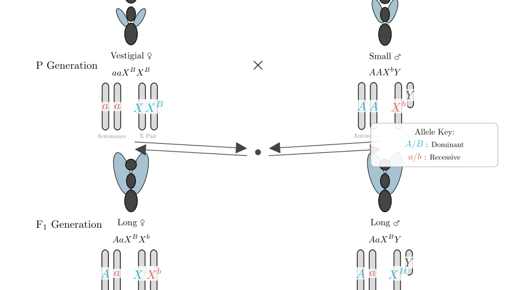
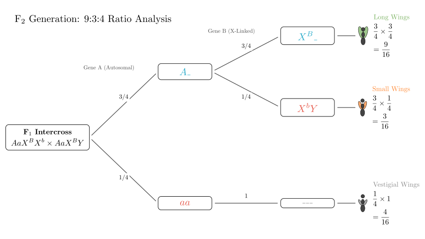
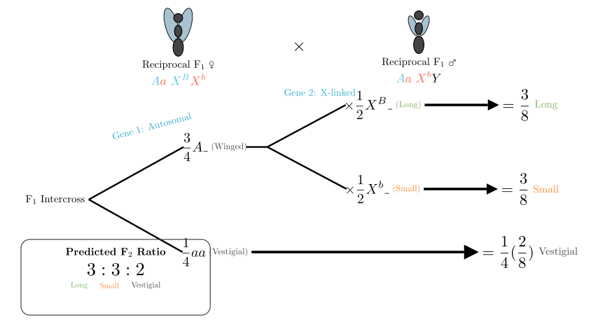

Problem Statement: A research group used homozygous Drosophila melanogaster (fruit flies) for the following experiment: Vestigial-wing ♀ × Small-wing ♂. The F₁ generation consisted entirely of Long-wing flies, with a female-to-male ratio of approximately 1:1. The F₁ males and females were interbred to obtain the F₂ generation, with the results shown in the table below:
| F₂ Phenotype | Count | Subtotal | Ratio |
|---|---|---|---|
| Long-wing ♀ | 548 | 804 | 9.43 |
| Long-wing ♂ | 256 | ||
| Small-wing ♀ | 0 | 239 | 2.81 |
| Small-wing ♂ | 239 | ||
| Vestigial-wing ♀ | 153 | 321 | 3.76 |
| Vestigial-wing ♂ | 168 |
Questions: (1) Based on the results, the inheritance of wing type follows the ___ law. The reason is _. (2) Write the genotypes of the parents ____ (assign letters yourself). (3) To verify certain judgments, design a reciprocal cross experiment, i.e., __. If the resulting F₁ flies have two wing types, the phenotypes are ___. Continue to mate these F₁ males and females to get F₂, predict the wing type ratio as Long : Small : Vestigial = ______.
Solution Approach: We will analyze the phenotypic ratios in the F₂ generation to determine the number of genes involved and their chromosomal locations (autosomal vs. sex-linked). The 9:3:4 ratio suggests two interacting gene pairs (epistasis). The sex-specific distribution of the "Small-wing" trait suggests X-linkage. We will visualize the crosses to confirm genotypes and predict the outcome of the reciprocal cross.

Step 1: Analyzing the F₂ Ratios and Inheritance Pattern
First, let's look at the total numbers for each wing phenotype in the F₂ generation: - Long-wing: 804 - Small-wing: 239 - Vestigial-wing: 321
Dividing these by the smallest group (roughly 85, derived from 1/16 of the total 1364), we get a ratio of approximately 9:3:4. - The classic Mendelian dihybrid ratio is 9:3:3:1. - A 9:3:4 ratio is a modification characteristic of recessive epistasis, where the homozygous recessive condition of one gene (e.g., aa) masks the expression of the other gene.
Step 2: Determining Chromosomal Location Next, we examine the distribution of traits by sex: - Small-wing: Appears only in males (239 males, 0 females). This strongly indicates that the gene controlling the Small vs. Long trait is X-linked. - Vestigial-wing: Appears in both females (153) and males (168) in a roughly 1:1 ratio. This indicates the epistatic gene causing vestigial wings is autosomal.
Conclusion for Question (1) & (2): - The inheritance follows the Law of Free Combination (Independent Assortment) because the two gene pairs (one autosomal, one X-linked) segregate independently. - Let's assign letters: - A/a (Autosomal): A_ allows wing development, aa results in Vestigial wings (epistatic). - B/b (X-linked): Xᴮ results in Long wings (dominant), Xᵇ results in Small wings (recessive). - Parental Genotypes: - The Vestigial female parent must be aa (for vestigial) and XᴮXᴮ (must pass the dominant Long allele to F₁ males, as F₁ males are Long). - The Small male parent must be AA (purebred) and XᵇY (for small wings). - Parents: Vestigial ♀ (aaXᴮXᴮ) × Small ♂ (AAXᵇY).

Step 3: Designing the Reciprocal Cross (Question 3)
To verify our hypothesis that one gene is X-linked, we perform a reciprocal cross (swapping the phenotypes of the parents).
Genotypes for Reciprocal Parents: - Small ♀: Must be AA (to have wings) and XᵇXᵇ (to be small). Genotype: AAXᵇXᵇ. - Vestigial ♂: Must be aa (vestigial). Since the original Vestigial stock carried the dominant B allele (proven by the F₁ males in the first experiment), this male is aaXᴮY.
Predicting Reciprocal F₁: - Cross: AAXᵇXᵇ × aaXᴮY - Offspring: - Females receive Xᵇ from mom and Xᴮ from dad → AaXᴮXᵇ (Long wings) - Males receive Xᵇ from mom and Y from dad → AaXᵇY (Small wings)
So, the F₁ generation will have two wing types: Females are Long-winged, Males are Small-winged.

Step 4: Predicting Reciprocal F₂ Ratios
We now cross the Reciprocal F₁ individuals: - F₁ Female: AaXᴮXᵇ - F₁ Male: AaXᵇY
Independent Assortment Analysis: 1. Autosomal Gene (A/a): Aa × Aa - 3/4 A_ (Winged) - 1/4 aa (Vestigial)
Combined Probabilities (F₂): - Long-wing: (3/4 A_) × (1/2 B_) = 3/8 - Small-wing: (3/4 A_) × (1/2 bb) = 3/8 - Vestigial-wing: (1/4 aa) × (1 any) = 1/4 (or 2/8)
Final Ratio: Long : Small : Vestigial = 3 : 3 : 2
Final Answer Recap: (1) Law of Independent Assortment; The F₂ generation shows a 9:3:4 ratio (a variant of 9:3:3:1), and the traits are controlled by two pairs of non-allelic genes located on different homologous chromosomes (one pair autosomal, one pair sex-linked). (2) Parents: Vestigial ♀ aaXᴮXᴮ, Small ♂ AAXᵇY. (3) Reciprocal experiment: Small-wing ♀ × Vestigial-wing ♂; F₁ phenotypes: Females are Long-wing, Males are Small-wing; Predicted F₂ ratio: 3:3:2.